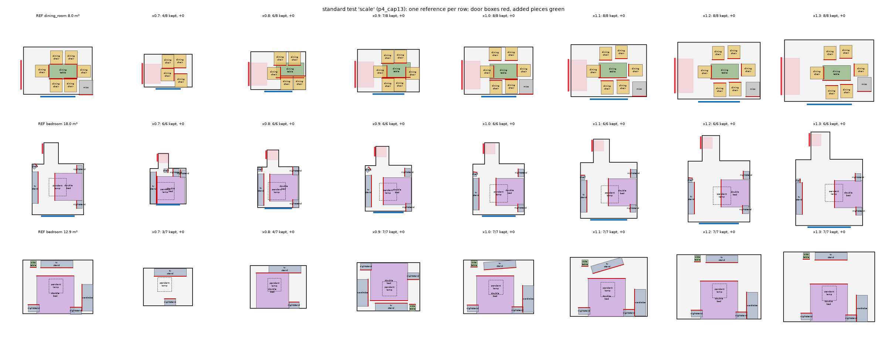
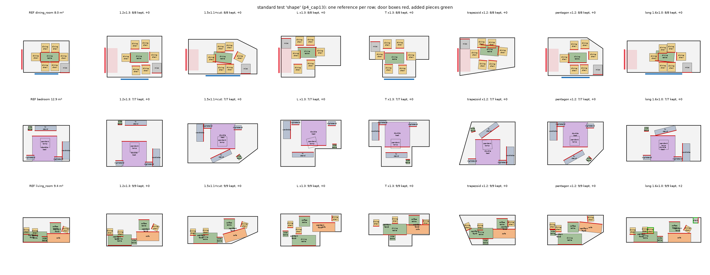
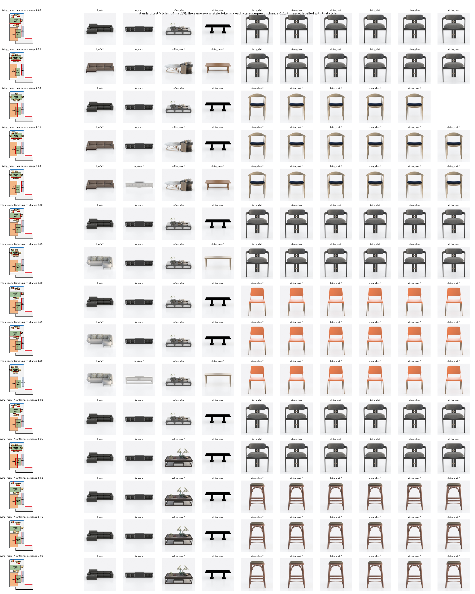

Working draft v0.3 — feasibility stage, not peer-reviewed v0.3
MethodExperimentsLimitationsReferencesAppendix
Abstract. A person who likes another home's arrangement wants it in their own home, directly: the same kind of furniture, arranged the same way, in a room of another size and outline with doors and windows elsewhere. IntentFlow is one transformer for this transfer. It reads the reference furniture carried into the target room together with the room's walls, doors and windows, and from one shared attention trunk it predicts which pieces a designer would keep, how much each relation between pieces matters, what a designer would add, and — as a rectified flow — where every piece goes. Keep, relation and addition heads are learned from pairs of real rooms furnished by two designers with similar furniture; no relation types, hierarchy or addition rules are written by hand. A projection in an arrangement metric then enforces non-penetration, containment and door clearance while moving neighbours together, and a style token re-selects furniture appearance without changing the arrangement. On 120 held-out real pairs, the distance of the output to the reference arrangement is \(D_A=0.084\) against 0.187 (LEGO-Net) and 0.371 (PhyScene), with 0.2% of pieces out of the room (17.5% / 14.3%). The affine transplant of the reference, which the model starts from, keeps the arrangement best (\(D_A=0.071\)) but leaves 27.8% of pieces outside the room. After short training the single model's keep, relation and addition heads remain below separately trained models, and its additions far below designers'.
Scene generators sample plausible layouts [3, 4, 5], rearrangement models tidy a given one [2], and physics-aware generators keep layouts interactable [1]. None of them takes a layout the user already likes and reproduces it in another room. The task we study is that transfer: given a reference scene \(S_\text{ref}\) (furniture with categories, sizes, poses and assets) and an empty target room \(P_t\) (outline, doors, windows), return a layout in \(P_t\) that keeps how \(S_\text{ref}\) is arranged — which side of a bed touches a wall, which chairs belong to which table, what faces the television — and is physically valid. When \(P_t\) is smaller, some pieces must go; when larger, a designer might add some. The appearance of the furniture may stay or move toward another style.
The decisions involved — what to keep, which relations matter, what to add, where each piece goes — depend on one another and on the same evidence: the reference arrangement seen inside the new room. IntentFlow makes them with one network. The reference's furniture, carried into the target room by an affine transplant, and the room's walls and openings are tokens of one attention trunk. At flow time \(\tau=0\) analysis heads read which pieces a designer would keep, how strongly each pair's relation is held, and how many pieces of each category a designer would add; along the flow a velocity head moves the pieces to their places. Real designer pairs — two designers' rooms with similar furniture — supervise keeping, relation strength and additions directly; placement also learns from augmented reshaped and rescaled rooms. Hard constraints are left to a projection after sampling, because a sampler satisfies them only up to its position error.
Contributions, with the current evidence:
Layout synthesis and rearrangement. Optimisation-based systems encode interior-design guidelines as energies [7, 8]; PlanIT [9] plans a relation graph and instantiates it; learned generators are autoregressive [3], diffusion-based [4] or graph-conditioned [5]. They generate a new layout for a room and take no reference arrangement to preserve. LEGO-Net [2] learns to move a messy layout toward a regular one; PhyScene [1] guides a diffusion sampler with collision and reachability terms. They are our baselines (§6.1).
Relation graphs. Scene-graph methods use a fixed vocabulary of relation types (support, facing, adjacency) [9, 5]. IntentFlow has no vocabulary: every node pair carries the same geometric descriptor, and the importance of a relation is regressed from how often a second designer keeps it. Pairwise MLP biases are added to attention logits, as in Graphormer [10].
Flows and transformers. Flow matching [11] and rectified flow [12] regress a velocity along straight paths between two distributions; an informative source lets us start from the affine transplant. The network is a permutation-equivariant transformer [13] with adaptive layer-norm conditioning as in DiT [14, 15]; its analysis heads share the trunk that places.
Constraints and appearance. The projection is solved by an augmented Lagrangian [16]. The appearance vector combines CLIP image features [17], 3D-FUTURE annotations [6] and room co-membership (a PPMI factorisation, cf. [18]), trained with an InfoNCE objective [19] and a supervised contrastive term [20].
Input. A reference scene \(S_\text{ref}=\{(c_i,s_i,p_i,\theta_i,a_i)\}_{i=1}^N\) with category \(c_i\), 3-D size \(s_i\in\mathbb R^3_{>0}\), floor position \(p_i\in\mathbb R^2\), yaw \(\theta_i\in(-\pi,\pi]\) and asset \(a_i\) (a 3D-FUTURE model); a target room \(P_t\), a simple polygon with door and window segments; optionally a style token \(z^\star\in\mathbb S^{31}\) and a degree of change \(\lambda\in[0,1]\).
Output. A layout \(\{(c_i,s_i',p_i',\theta_i',a_i')\}\) in \(P_t\). Pieces may be removed, replaced by a smaller or restyled asset of the same category, and new pieces may be added.
Requirements. (1) Arrangement (the core): the relations among the reference's pieces and between pieces and walls, doors and windows carry over — against a wall, facing, chairs around a table, nightstands flanking a bed. (2) Physics: every piece inside \(P_t\), no interpenetration beyond what real layouts show (a chair under a table), doorways clear. (3) Style: appearance follows \(z^\star\) by an amount set by \(\lambda\), with the arrangement unchanged.
Arrangement distance. For pieces \(u,v\), \(\phi_{uv}\in\mathbb R^6\) holds \(v\)'s offset in \(u\)'s frame (2), \(\cos\) and \(\sin\) of the relative yaw, the footprint gap and the centre distance. The per-relation distance
$$\begin{aligned}d(\phi,\phi')=\tfrac{1}{3.5}\Big[&\tfrac{1-\cos\angle(\phi_{1:2},\phi'_{1:2})}{2}+\tfrac{1-\cos(\Delta\theta-\Delta\theta')}{2}\\&+\min\!\Big(\tfrac{|\log(\phi'_6/\phi_6)|}{\log 3},1\Big)+\tfrac12\,\big[\,[\phi_5<0.05]\neq[\phi'_5<0.05]\,\big]\Big]\in[0,1]\end{aligned}\tag{1}$$combines offset direction, relative orientation, log distance ratio and contact (gap below 5 cm). Between two layouts of corresponding pieces,
$$D(S_\text{ref},S_\text{out})=\frac{1}{|\mathcal E|}\sum_{(i,j)\in\mathcal E}d\big(\phi^\text{ref}_{ij},\phi^\text{out}_{ij}\big),\tag{2}$$over all ordered pairs \(\mathcal E\) of pieces present in both. \(D\) scores placement of the kept pieces only; removals are scored separately.
IntentFlow is one network (Fig. 1, Fig. 2). It is used twice per candidate layout: once at \(\tau=0\) to read the reference inside the target room (keep, relation weights, additions), and then along the flow to place the pieces. Between the two passes a thin discrete step turns the readings into the set of pieces to place; after the flow a projection makes the layout feasible. The structure step and the projection contain no learned parameters; the appearance vectors of §4.7 are learned separately from the furniture catalogue.
| between | examples | descriptor |
|---|---|---|
| piece ↔ piece | chairs around a table, nightstands flanking a bed, sofa facing a TV, coffee table in front | \(\phi_{ij}\): offset of \(j\) in \(i\)'s frame, relative yaw, gap, distance |
| piece ↔ wall | against a wall, and which side (a bed's head, a sofa's back) | \(\phi\) to the nearest point of the nearest wall segment; the side = the wall's inward normal in the piece's frame |
| piece ↔ door | near a door, facing it; never blocking it | \(\phi\) to the nearest door; blocking is a hard constraint of \(\Pi_\theta\) |
| piece ↔ window | near a window, facing it | \(\phi\) to the nearest window |
Table 1. Relations IntentFlow keeps. All four use the same descriptor \(\phi\) and the same distance \(d\); walls, doors and windows are nodes whose frame is their segment midpoint and inward normal. Piece–piece relations get a learned weight from the relation head; relations to walls, doors and windows enter the network as inputs \(\nu_i\). No relation type or distance threshold enters the method; the evaluation metrics of §6.1 use fixed thresholds only to report kept wall, door and window relations.
The keep, relation and addition decisions must be learned from data: no rule-based relation types, no thresholds, and no system-defined hierarchy. Anchors, drop order and dependencies follow from the learned outputs (§4.4). The rules that remain in the code base serve data generation, correspondence and evaluation (Table 2).
| rule | where | role now |
|---|---|---|
| relation types and thresholds (wall contact within 15 cm, near a window 1.2 m, near a door 1.5 m, window strip 0.6 m, facing cos > 0.7) | rr/functional.py | evaluation metrics only (kept wall / door / window relations) |
| category lookup tables (category-pair keep rates, functional importance) | outputs/w_catmean.json, functional_importance.json | baseline of Table 9; importance filter of the functional metrics (> 0.2) |
| anchor list, seat-at-table string matching | rr/pipeline.py, rr/structure.py | only in an ablation path without learned keep and relation heads; unused by IntentFlow |
| grouping rules of the room augmentation | rr/augment.py | produce the reshaped and rescaled target rooms of the augmentation (§5) |
| category families (e.g. all bed types → bed) | rr/pairs.py | correspondence of pieces in real pairs, hence part of the supervision of the analysis heads |
Table 2. Hand-written rules that remain in the code base, and their role. The family table is the one rule that shapes the supervision; it defines which pieces correspond, not which relations matter.
Trunk. Tokens are the reference's pieces carried into the target room (one per piece), the target room's wall segments and its doors and windows with their clearance boxes. A furniture token holds its category, log size, elevation, current state \(x_{\tau,i}\) with Fourier features, the distances of its sides to the walls now and in the reference, the votes of the other pieces (where each other piece's reference relation puts it, given that piece's current pose), and the functional relations \(\nu_i\) of its reference piece to the nearest wall, door and window (offset to the node's nearest point, relative yaw, gap, presence) together with what is left to undo in \(P_t\). Pairwise terms enter as additive attention biases [10]: the current geometry (penetration, wall gaps), the reference relation of the same pair and the offset still to undo, and a relation-weight prior. Adaptive layer norm [15] injects the flow time, room descriptors and a pooled reference code \(\zeta_\text{ref}\) from a 4-block encoder of the reference's room-free relations. The trunk has 8 blocks of width 256 with 8 heads and is permutation-equivariant.
Heads. Placement heads read the furniture tokens at every flow step: the velocity (§4.5), a wall-contact and a wall-parallel logit. Analysis heads read the trunk once, at \(\tau=0\) with every piece at its transplant pose:
$$\kappa_i=\operatorname{sigmoid}\big(\mathrm{MLP}_\kappa(e_i)\big),\qquad \hat w_{ij}=\operatorname{sigmoid}\big(\mathrm{MLP}_w[e_i,e_j]\big),\qquad r=\operatorname{softplus}\big(\mathrm{MLP}_r[\bar e_F,\bar e_R,c]\big)\in\mathbb R_{\ge0}^{64},\tag{3}$$with \(e_i\) the final token of piece \(i\), \(\bar e_F\) and \(\bar e_R\) the means over furniture and room tokens and \(c\) the layer-norm conditioning vector. \(\kappa_i\) is the probability that a designer keeps piece \(i\) in this room, \(\hat w_{ij}\in[0,1]\) how much of the relation \(i\to j\) a second designer keeps, and \(r_c\) the expected number of added pieces of category \(c\). The area and shape of the target room enter through the room tokens and the transplant.
Supervision from real pairs. A real pair is a room \(A\) and a partner room \(B\) of the same type from another house whose category-family sets have Jaccard similarity above 0.6 and whose area ratio lies in [0.5, 2]. Pieces are matched within category families by footprint size [21]. An analysis row carries \(A\)'s pieces into \(B\)'s empty room and is labelled by what \(B\)'s designer did: a floor piece is kept (\(y^\text{keep}_i=1\)) if matched and dropped if unmatched while \(B\) contains its family (unlabelled if \(B\) lacks the family, which says more about the house than about space); matched pairs carry the preservation \(y_{ij}\); for the addition head, only \(A\)'s kept pieces are carried in and \(n_c\) counts the pieces of category \(c\) that \(B\) added. The analysis loss is
$$\mathcal L_\text{ana}=\mathrm{BCE}\big(\kappa_i,y^\text{keep}_i\big)+\frac{1}{|\mathcal Y|}\sum_{(i,j)\in\mathcal Y}\big(\hat w_{ij}-y_{ij}\big)^2+\frac{1}{3}\sum_c\big(r_c-n_c\log r_c\big),\qquad y_{ij}=1-d\big(\phi^A_{ij},\phi^B_{kl}\big).\tag{4}$$(Poisson negative log-likelihood for the counts). No annotation and no rule enters \(y\), \(y^\text{keep}\) or \(n\). The total loss adds \(\mathcal L_\text{ana}\) on analysis rows to the flow-matching and auxiliary losses of §4.5 on placement rows; both kinds share every trunk parameter.
When \(P_t\) cannot hold the reference, cannot be filled by it, or leaves the transplant's orientation ambiguous, four discrete variables are chosen: the kept set \(K\subseteq\{1,\dots,N\}\), a size level \(\sigma_i\) per piece (own asset or a smaller one of the same category), the quarter turn \(q\) of the transplant, and the additions \(A\). Anchors are pieces with \(\kappa_i\approx1\); no list of anchor categories exists. A free-standing piece takes as host the piece it is most strongly related to (\(\hat w\)) among those with higher \(\kappa\), and keeps that host's direction in \(\Pi_\theta\); edge strength alone measures preservation, not dependence, so \(\kappa\) orients it. A candidate is placed by the flow and projected, \(\hat S=\Pi_\theta(v_\vartheta(K,\sigma,q,A))\), and candidates are compared lexicographically (no weights):
The step is a greedy ascent on this key with \(\Pi_\theta\) as the feasibility oracle (Table 3). The additions' starting positions are where designers put each category relative to its most frequent partner category present (corpus offsets, the least colliding of 24 draws).
| step | move | term of the key |
|---|---|---|
| 1 | footprint bound: \(\sum_{i\in K}\mathrm{fp}_i\le\max\big(\mathrm{fp}_\text{ref}\min(1,\rho+0.14),\ q_{95}(\text{density})\,|P_t|\big)\), \(\rho\) the area ratio; pieces that cannot fit at all (half short side above the inscribed radius) go first | necessary condition for 1 (pruning) |
| 2 | within the bound: drop the floor piece with least \(\kappa_i\sum_j(\hat w_{ij}+\hat w_{ji})\), both re-read on the remaining pieces after each removal | 4 (keep relation mass) |
| 3 | still infeasible or unusable after projection: up to 3 extra drops, only among pieces with \(\kappa_i<\tfrac12\); door clearance itself is a constraint of \(\Pi_\theta\) | 1–2 with the real oracle |
| 4 | still infeasible: smaller assets for the whole selection, the mildest feasible shrink of 0.9, 0.8, 0.7, 0.6, 0.5, 0.4 and the area/axis factor \(\min(\sqrt\rho,H^t_a/H^\text{ref}_a,1)\); smaller assets buy fitting, never usability | 3 (departure for feasibility) |
| 5 | still unusable: the other quarter turns whose metric outline IoU is within 0.05 of the best (a scaled rectangle never turns) | 3 |
| 6 | additions (any target room): \(n_c=\mathrm{round}(r_c)\) pieces per category, highest rate first, at most 6; placed together by the flow with the kept pieces fixed; accepted if feasible and usable (walkable share at least \(R_\text{walk}^\text{ref}-0.05\)), otherwise the least wanted piece goes and the rest is placed again | additions \(A\) |
Table 3. Steps of the structure step. In the common case only steps 1–2 run and one candidate is placed; the worst case evaluates 15 candidates, each one flow sample and one projection.
State and flow. A piece's state is \(x_i=(p_i/L,\cos\theta_i,\sin\theta_i)\): its position in the frame of \(P_t\)'s minimum rotated rectangle, in units of \(L=3\) m, and its yaw. The flow starts at the affine transplant \(x_0=\mathcal T_q(S_\text{ref},P_t)\): each reference pose carried proportionally into the target frame under quarter turn \(q\) (the outline-IoU best turn at inference). Positions move on straight paths and yaws along the shorter arc [12, 11]:
$$\begin{gathered}x_\tau=\big((1-\tau)p_0+\tau p_1,\ \theta_0+\tau\,\Delta\theta\big),\\ \mathcal L_\text{FM}=\mathbb E_{\tau}\sum_{i}m_i\Big(\big\lVert v^p_{\vartheta,i}-(p_{1,i}-p_{0,i})\big\rVert^2+R_i^2\big\lVert v^\theta_{\vartheta,i}-\Delta\theta_i\,\mathbf e_\perp(\theta_{\tau,i})\big\rVert^2\Big),\end{gathered}\tag{5}$$in metres: \(R_i\) is the piece's half diagonal, so the yaw error counts as corner displacement (the metric of \(\Pi_\theta\)); \(\mathbf e_\perp(\theta)=(-\sin\theta,\cos\theta)\); \(m_i\) masks supervised free pieces; \(\tau\sim\mathcal U(0,1)\). Auxiliary terms: binary cross-entropy of the wall-contact and wall-parallel heads (targets: contact within 5 cm, yaw within 4° of the frame axes), and a relative loss (weight 1) on the position errors of neighbouring pieces (footprints within 0.3 m) so that a table and its chairs move together. Sampling integrates 50 Euler steps. The conditions come from \(S_\text{ref}\) and \(P_t\) only; the answer never enters an input.
Placement rows. Each placement row is one kind: real (a real pair: the matched pieces carried from \(A\) into \(B\)'s room and placed as \(B\)'s designer did), shape (L, T, trapezoid, pentagon outlines at another size), size, delete (a strong shrink whose target removes pieces), big (enlargements of 1.3–1.7×) and self (the room itself). Any kind may come as an infill row (probability 0.2): a random part is fixed and the rest placed from relational starts, which teaches the placement of additions. Targets of the synthetic kinds are described in §5.
Inference cost. One analysis pass, one structure step, one flow sample and one projection in the common case.
\(\Pi_\theta\) returns the feasible layout closest to the placed poses \((\hat p,\hat\theta)\):
$$\begin{aligned}&\min_{p,\theta}\ \sum_i\lVert p_i-\hat p_i\rVert^2+\big(R_i(\theta_i-\hat\theta_i)\big)^2+0.5\sum_{i\neq j}\bar w_{ij}\big\lVert(p_i-p_j)-(\hat p_i-\hat p_j)\big\rVert^2\\\text{s.t.}\ &\mathrm{pen}(i,j)\le\alpha_{ij}\ \ (i,j\ \text{overlapping in height}),\qquad \text{corners}(p_i,\theta_i)\subset P_t,\\&\mathrm{pen}(i,b)\le0\ \ (b\in\mathcal D,\ i\ \text{below the door top}),\qquad \theta_i\in\Theta_i\ \ (i\ \text{locked}),\qquad \mathrm{gap}(i,\ell_i)\le0.03\,\text{m}\ \ (i\in\mathcal C)\end{aligned}\tag{8}$$Why the constraints are not learned. Two placements of a penalty conflict with flow matching. On the endpoint estimate \(\hat x_1=x_\tau+(1-\tau)v_\vartheta\), which for the exact field is the posterior mean \(\mathbb E[x_1\mid x_\tau]\), a non-convex feasible set (a chair left or right of a doorway) can make the constraint infeasible even for the exact field, since the mean of two feasible answers can lie in the doorway. On the sampler output, the answers lie on the constraint boundary (pieces touch walls and each other), so any position error \(e\) with scale \(s>0\) yields an expected violation that grows with \(s\). The projection enforces the constraints per sample instead; the corresponding ablation (constraints as training losses) is pending.
Style means the furniture's appearance (colour, shape, material). Each asset \(k\) of the catalogue gets \(z_k=f(\text{co}_k,\text{clip}_k,\text{label}_k)\in\mathbb S^{31}\), an MLP (hidden width 256) of its room co-membership embedding (PPMI factorised by SVD), its CLIP image features [17] and one-hot 3D-FUTURE style, theme and material labels. Training holds out one piece of a room, whose designer's asset is \(k^\ast\), and ranks \(k^\ast\) against same-category assets by the mean \(\bar z\) of the room's other pieces, plus a supervised contrastive term on the style label:
$$\mathcal L_z=-\log\frac{\exp(\langle z_{k^\ast},\bar z_{\text{room}\setminus k^\ast}\rangle/\gamma)}{\sum_{k\in\mathrm{cat}(k^\ast)}\exp(\langle z_k,\bar z_{\text{room}\setminus k^\ast}\rangle/\gamma)}+\mu\,\mathcal L_\text{SupCon}(z;\text{style label}),\tag{9}$$with \(\gamma=0.1\), 63 sampled negatives per query and \(\mu>0\) [19, 20].
Swapping. The token \(z^\star\) is the mean \(z\) of a style label (or of another room). Pieces are grouped into units of identical assets (four equal chairs change together). A unit's candidate is the same-category asset closest to \(z^\star\) within a size tolerance \(\beta\), tried as 12%, 20%, 30% per dimension (\(\Pi_\theta\) absorbs the rest); with a style label only assets carrying it qualify, without one the candidate must be closer than the own asset by 0.05. Units without a candidate keep their asset. Units are sorted by their gain toward \(z^\star\) and taken while that brings the number of swapped pieces closer to \(\lambda N\):
$$\max_U\sum_{u\in U}\mathrm{gain}_u\quad\text{s.t.}\quad\Big|\sum_{u\in U}|u|-\lambda N\Big|\ \text{minimal}.\tag{10}$$The swap happens inside the structure search, before placement, so the arrangement passes through the placement and \(\Pi_\theta\) unchanged.
Corpus. 3D-FRONT [22] rooms with 5–24 pieces after duplicate removal (13,729 rooms), split by house with seed 0 into 10,988 training, 1,402 validation and 1,339 test rooms (10% / 10% of houses). The test split has not been used. All evaluations below use validation rooms, which no model was trained on; they were used to guide development, so final numbers will come from the test split.
| source | rooms | pairs / targets | used for |
|---|---|---|---|
| real pairs, full (all partner pairs, with additions and drops) | 2,636 | 6,828 | analysis rows: keep, relation and addition heads |
| real pairs with small relation change (\(D\le0.15\), matched pieces) | 1,899 | 3,350 | placement rows of kind real |
| augmentation: reshaped and rescaled rooms | 463 | 3,052 (L 463, pentagon 461, T 463, trapezoid 463, size 462, delete 277, big 463) | placement rows of the synthetic kinds |
Table 4. Training data. A room's partners are up to 4 rooms of the same type from other houses (§4.3). Two designers' arrangements of matched pieces are a median \(D=0.35\) apart; 87% of full pairs contain pieces designer B added (2.82 per pair). Rooms whose pieces extend more than 20% of their footprint outside the room are excluded.
Augmentation. For reshaped and rescaled rooms that real pairs rarely cover, targets are produced by a constraint-aware, relation-preserving layout optimisation of the reference; they are used only as training augmentation for placement, never for the keep, relation or addition heads.
Standard tests (std_test.py). Fixed validation rooms with 6–12 pieces including a bed, a sofa with a TV or a dining set, and no
piece more than 10% outside; 10 rooms per test. Scale: the room scaled by 0.7, 0.8, 0.9, 1.0, 1.1, 1.2, 1.3. Outline: targets no smaller than the reference —
1.2x1.3; 1.5x1.1+cut; L x1.3; T x1.3; trapezoid x1.2; pentagon x1.2; long 1.6x1.0. Style: the room itself with the token of Japanese, Light Luxury, New Chinese at \(\lambda\in\{0, 0.25, 0.5, 0.75, 1\}\).
Held-out real pairs (real_eval.py). 120 validation rooms \(A\), each with a partner \(B\) (same criteria as training); a method gets
\(A\) and \(B\)'s empty room. Since the user asks for \(A\)'s arrangement, \(D_A\) (eq. 2 against \(A\), over kept pieces) is the primary arrangement metric; \(D_B\) (against \(B\)'s
poses) is reported only as a reference, because \(B\) never saw \(A\) and two designers are a median 0.35 apart.
Metrics. \(D\) (eq. 2) over kept pieces, read together with kept (share of reference pieces in the output). Torn pairs: of the floor pairs that touch in the reference (gap ≤ 5 cm) and are both kept, the share more than 30 cm apart in the output. Wall kept: of the reference's wall contacts (same side) whose category importance exceeds 0.2, the share kept (thresholds of Table 2, evaluation only). Out of room: floor pieces more than 5% outside. Collision: floor pairs overlapping by more than 2% of the smaller footprint, nestable pairs excluded (real pairs: 10%). Door blocked: door boxes more than 5% covered. Keep F1, add F1: kept pieces of \(A\) and added categories against \(B\)'s designer (add F1 = 1 when both add nothing). \(D\) measures arrangement only, not feasibility.
Statistics. Differences are mean paired differences over the same targets (standard tests) or the same pairs (real pairs), with 95% intervals and two-sided \(p\) from a bootstrap that resamples rooms or pairs (10,000 resamples); significant means \(p<0.05\).
Baselines (released checkpoints, run on the same targets and scored by the same code; scripts/baselines/PROTOCOL.md). LEGO-Net
[2] is used as a retargeter: it receives the affine transplant of every reference piece its living-room vocabulary covers, with the target floor plan,
and denoises it; pieces outside its vocabulary stay at the transplant (it sees 57% of the pieces on real pairs); it keeps everything and adds nothing.
PhyScene [1] receives only the target floor plan — its released checkpoint has no object-list or arrangement conditioning — and generates a layout
with its collision, room-layout and reachability guidance; its objects are matched to \(A\)'s pieces by category, so \(D\) is over the matched pieces
(41% of \(A\)'s pieces on real pairs). Both checkpoints are living-room models and are run on all room types. The affine transplant is the input
IntentFlow starts from; it is shown as a reference row, not as a method.
Model. IntentFlow cap13: 6,000 steps, warm-started from an earlier placement-only checkpoint (cap9) whose new analysis heads start from zero. A shorter run (cap12) is shown as a second row.
| method | \(D\) ↓ (kept pieces) | kept | added / room | torn pairs ↓ | wall kept ↑ | out of room ↓ | collision ↓ | door blocked ↓ |
|---|---|---|---|---|---|---|---|---|
| affine transplant (input, not a method) | 0.060 | 1.00 | 0.00 | 6.4% | 0.72 | 17.7% | 4.4% | 23% |
| LEGO-Net | 0.158 | 1.00 | 0.00 | 8.8% | 0.51 | 22.2% | 15.1% | 27% |
| PhyScene | 0.356 | 0.38 | 4.74 | 8.1% | 0.39 | 14.7% | 12.0% | 50% |
| IntentFlow (cap13) | 0.068 | 0.92 | 0.26 | 4.5% | 0.77 | 0.0% | 0.0% | 0% |
| IntentFlow, shorter run (cap12) | 0.069 | 0.91 | 0.46 | 5.8% | 0.71 | 0.0% | 0.0% | 0% |
Table 5. Scale test (10 validation rooms per column, one seed; means over columns). The affine transplant is the input, not a method: it keeps every relation by construction and ignores the room.
| method | \(D\) ↓ (kept pieces) | kept | added / room | torn pairs ↓ | wall kept ↑ | out of room ↓ | collision ↓ | door blocked ↓ |
|---|---|---|---|---|---|---|---|---|
| affine transplant (input, not a method) | 0.080 | 1.00 | 0.00 | 28.7% | 0.48 | 14.4% | 0.5% | 14% |
| LEGO-Net | 0.154 | 1.00 | 0.00 | 22.8% | 0.36 | 14.4% | 12.8% | 0% |
| PhyScene | 0.358 | 0.46 | 5.50 | 20.7% | 0.36 | 12.1% | 6.2% | 71% |
| IntentFlow (cap13) | 0.063 | 1.00 | 0.59 | 7.7% | 0.67 | 0.2% | 0.0% | 0% |
| IntentFlow, shorter run (cap12) | 0.068 | 1.00 | 0.74 | 13.8% | 0.63 | 0.3% | 0.0% | 0% |
Table 6. Outline test, same columns as Table 5.
On the standard tests IntentFlow's \(D\) is 0.068 / 0.063 (scale / outline) against 0.158 / 0.154 for LEGO-Net (p<0.001 / p<0.001) and 0.356 / 0.358 for PhyScene (p<0.001 / p<0.001); it keeps more wall contacts than both (LEGO-Net p=0.004, PhyScene p<0.001 on outlines). Its torn-pair rates are not significantly different from either baseline's (p=0.113; p=0.035 on outlines, PhyScene over few matched pairs). After \(\Pi_\theta\) its largest out-of-room, collision or door-blocking rate over all columns is 1.7%; LEGO-Net leaves up to 22.2% and PhyScene up to 14.7% of pieces outside the room. The affine transplant has \(D\) 0.060 / 0.080 but 17.7% / 14.4% of pieces outside the room: \(D\) rewards staying put, feasibility does not.
| method | \(D_A\) ↓ (primary) | keep F1 ↑ | add F1 ↑ | added / pair (method / designer) | torn pairs ↓ | out of room ↓ | collision ↓ | \(D_B\) (reference only) |
|---|---|---|---|---|---|---|---|---|
| affine transplant (input, not a method) | 0.071 | 0.848 | 0.125 | 0.00 / 2.70 | 11.2% | 27.8% | 9.5% | 0.337 |
| LEGO-Net | 0.187 | 0.848 | 0.125 | 0.00 / 2.70 | 15.9% | 17.5% | 20.1% | 0.369 |
| PhyScene | 0.371 | 0.451 | 0.114 | 5.76 / 2.70 | 31.2% | 14.3% | 12.8% | 0.362 |
| IntentFlow (cap13) | 0.084 | 0.849 | 0.161 | 0.53 / 2.70 | 12.4% | 0.2% | 6.2% | 0.335 |
| IntentFlow, shorter run (cap12) | 0.085 | 0.856 | 0.176 | 0.49 / 2.70 | 16.5% | 0.3% | 6.7% | 0.331 |
Table 7. Held-out real pairs. LEGO-Net keeps every piece and adds none, so its keep and add F1 equal the transplant's by construction; PhyScene's \(D_A\) is over the pieces it could match by category.
On held-out real pairs IntentFlow's \(D_A\) is 0.084, against 0.187 for LEGO-Net (−0.103 [−0.118, −0.089], p<0.001, 120 pairs) and 0.371 for PhyScene (−0.277 [−0.307, −0.246], p<0.001, 82 pairs), with 0.2% of pieces out of the room and 6.2% colliding pairs (LEGO-Net 17.5% / 20.1%, PhyScene 14.3% / 12.8%). Its keep F1 is 0.849 (PhyScene 0.451, p<0.001) and its add F1 0.161 (LEGO-Net, which adds nothing, 0.125, p=0.111; PhyScene 0.114, p=0.208). The affine transplant has the lowest \(D_A\) (0.071) and 27.8% of pieces outside the room; it is what IntentFlow starts from, and the difference to it is what feasibility costs in arrangement. \(D_B\) differs little between methods; it is a reference only.
| room type (pairs) | affine transplant: \(D_A\) / out of room | LEGO-Net: \(D_A\) / out of room | PhyScene: \(D_A\) / out of room | IntentFlow: \(D_A\) / out of room |
|---|---|---|---|---|
| bedroom (60) | 0.061 / 30% | 0.158 / 21% | 0.380 / 14% | 0.071 / 0% |
| living room (49) | 0.090 / 29% | 0.213 / 14% | 0.374 / 16% | 0.106 / 0% |
| dining room (6) | 0.053 / 3% | 0.235 / 8% | 0.247 / 10% | 0.046 / 0% |
| library (5) | 0.040 / 18% | 0.219 / 21% | 0.389 / 14% | 0.055 / 0% |
Table 8. Held-out real pairs per room type: \(D_A\) / out of room. Both baselines are living-room checkpoints; the living-room row is their own domain.


| model | keep AUC ↑ | relation Spearman ↑ (piece pairs) | add F1 ↑ | added / pair (model / designer) |
|---|---|---|---|---|
| one model (cap13), analysis heads | 0.802 | 0.360 | 0.249 | 1.01 / 2.65 |
| one model, shorter run (cap12) | 0.825 | 0.381 | 0.255 | 0.99 / 2.65 |
| separate models (ablation): graph transformer + addition network | 0.879 | 0.427 | 0.383 | 1.58 / 2.65 |
| room-type prior (additions only) | — | — | 0.144 | 0.45 / 2.65 |
| add nothing | — | — | 0.141 | 0.00 / 2.65 |
| category-pair mean (relations only) | — | 0.369 | — | — |
Table 9. Analysis heads on held-out real pairs (2,575 pairs from validation rooms): keep AUC against the designer's keep label, Spearman correlation of relation weights with the measured preservation of matched piece pairs, and add F1 with \(n_c=\mathrm{round}(r_c)\). The separate models (a graph transformer for keep and relations, an addition network) are an ablation of the single-model design, not part of IntentFlow.
The single model's keep AUC is 0.802 against 0.879 for a separately trained graph model, its relation Spearman 0.360 against 0.427 (category-pair mean 0.369), and its add F1 0.249 against 0.383 for a separate addition network (room-type prior 0.144, adding nothing 0.141). After 6,000 steps the shared trunk has not caught up with the specialised models on any head. In the full pipeline on real pairs, the earlier student with separate models reaches add F1 0.274 against 0.161 (significance pending), while \(D_A\) is not significantly different (0.081 vs 0.084) and the single model tears more groups (12.4% vs 12.5%, significance pending). On outline targets the single model keeps more wall contacts (significance pending) at a higher \(D\) (significance pending). Its added pieces per pair (1.01) stay far below the designers' (2.65).
| comparison (a − b) | test | metric | mean a / b | difference | 95% interval | p | rooms / pairs |
|---|---|---|---|---|---|---|---|
| IntentFlow cap13 − LEGO-Net | scale | \(D\) | 0.068 / 0.158 | −0.090 | [−0.144, −0.038] | p<0.001 | 10 |
| IntentFlow cap13 − LEGO-Net | scale | wall kept | 0.76 / 0.48 | +0.28 | [+0.12, +0.42] | p=0.002 | 10 |
| IntentFlow cap13 − LEGO-Net | scale | torn pairs (pts) | 4.9% / 8.9% | −3.9 | [−10.9, +3.0] | p=0.267 | 10 |
| IntentFlow cap13 − LEGO-Net | shape | \(D\) | 0.063 / 0.154 | −0.092 | [−0.126, −0.056] | p<0.001 | 10 |
| IntentFlow cap13 − LEGO-Net | shape | wall kept | 0.67 / 0.36 | +0.31 | [+0.10, +0.49] | p=0.004 | 10 |
| IntentFlow cap13 − LEGO-Net | shape | torn pairs (pts) | 7.7% / 22.8% | −15.1 | [−34.7, +4.5] | p=0.113 | 9 |
| IntentFlow cap13 − PhyScene | scale | \(D\) | 0.066 / 0.355 | −0.288 | [−0.340, −0.226] | p<0.001 | 10 |
| IntentFlow cap13 − PhyScene | scale | wall kept | 0.80 / 0.40 | +0.40 | [+0.17, +0.58] | p=0.001 | 9 |
| IntentFlow cap13 − PhyScene | scale | torn pairs (pts) | 4.2% / 6.5% | −2.3 | [−7.8, +9.6] | p=0.532 | 4 |
| IntentFlow cap13 − PhyScene | shape | \(D\) | 0.066 / 0.357 | −0.292 | [−0.352, −0.233] | p<0.001 | 10 |
| IntentFlow cap13 − PhyScene | shape | wall kept | 0.67 / 0.36 | +0.32 | [+0.13, +0.51] | p<0.001 | 8 |
| IntentFlow cap13 − PhyScene | shape | torn pairs (pts) | 13.2% / 20.1% | −6.9 | [−12.2, −0.8] | p=0.035 | 4 |
| IntentFlow cap13 − LEGO-Net | real | \(D_A\) | 0.084 / 0.187 | −0.103 | [−0.118, −0.089] | p<0.001 | 120 |
| IntentFlow cap13 − LEGO-Net | real | keep F1 | 0.85 / 0.85 | +0.00 | [−0.00, +0.01] | p=0.888 | 120 |
| IntentFlow cap13 − LEGO-Net | real | add F1 | 0.16 / 0.12 | +0.04 | [−0.01, +0.08] | p=0.111 | 120 |
| IntentFlow cap13 − LEGO-Net | real | torn pairs (pts) | 12.4% / 15.9% | −3.5 | [−9.9, +2.7] | p=0.260 | 107 |
| IntentFlow cap13 − PhyScene | real | \(D_A\) | 0.084 / 0.371 | −0.277 | [−0.307, −0.246] | p<0.001 | 82 |
| IntentFlow cap13 − PhyScene | real | keep F1 | 0.85 / 0.45 | +0.40 | [+0.33, +0.46] | p<0.001 | 120 |
| IntentFlow cap13 − PhyScene | real | add F1 | 0.16 / 0.11 | +0.05 | [−0.03, +0.12] | p=0.208 | 120 |
| IntentFlow cap13 − PhyScene | real | torn pairs (pts) | 12.4% / 31.2% | −9.6 | [−26.0, +6.5] | p=0.247 | 42 |
| IntentFlow cap13 − cap9 + separate models | real | \(D_A\) | — | — | pending | — | — |
| IntentFlow cap13 − cap9 + separate models | real | add F1 | — | — | pending | — | — |
| IntentFlow cap13 − cap9 + separate models | real | torn pairs (pts) | — | — | pending | — | — |
| IntentFlow cap13 − cap9 + separate models | shape | \(D\) | — | — | pending | — | — |
| IntentFlow cap13 − cap9 + separate models | shape | wall kept | — | — | pending | — | — |
| IntentFlow cap13 − cap9 + separate models | shape | torn pairs (pts) | — | — | pending | — | — |
| cap9, arrangement-metric \(\Pi_\theta\) − cap9, Euclidean \(\Pi_\theta\) | scale | torn pairs (pts) | 5.1% / 6.0% | −0.9 | [−3.1, +1.1] | p=0.426 | 10 |
| cap9, arrangement-metric \(\Pi_\theta\) − cap9, Euclidean \(\Pi_\theta\) | shape | torn pairs (pts) | 10.3% / 12.7% | −2.4 | [−4.2, −0.8] | p=0.001 | 9 |
| cap9, reference wall sides forced − cap9 + separate models | shape | wall kept | 0.84 / 0.61 | +0.23 | [+0.15, +0.34] | p<0.001 | 10 |
| cap9, reference wall sides forced − cap9 + separate models | shape | torn pairs (pts) | 18.8% / 10.8% | +7.9 | [+2.4, +15.1] | p<0.001 | 9 |
| cap9, reference wall sides forced − cap9 + separate models | shape | \(D\) | 0.071 / 0.059 | +0.011 | [+0.003, +0.020] | p=0.003 | 10 |
| IntentFlow cap13 − IntentFlow cap12 | real | \(D_A\) | 0.084 / 0.085 | −0.002 | [−0.008, +0.005] | p=0.628 | 120 |
| IntentFlow cap13 − IntentFlow cap12 | real | add F1 | 0.16 / 0.18 | −0.02 | [−0.06, +0.03] | p=0.515 | 120 |
Table 10. Room- or pair-clustered paired bootstrap (10,000 resamples); bold \(p\) marks \(p<0.05\). Torn pairs in percentage points. Rows marked pending have no bootstrap result.
| setting | scale: \(D\) ↓ | scale: torn pairs ↓ | scale: wall kept ↑ | scale: \(\Pi_\theta\) move | outline: \(D\) ↓ | outline: torn pairs ↓ | outline: wall kept ↑ | outline: \(\Pi_\theta\) move |
|---|---|---|---|---|---|---|---|---|
| Euclidean projection | 0.071 | 5.8% | 0.79 | 10 cm | 0.060 | 12.7% | 0.62 | 8 cm |
| arrangement-metric projection | 0.068 | 5.0% | 0.77 | 11 cm | 0.060 | 10.3% | 0.61 | 10 cm |
Table 11. Projection metric (earlier student cap9 with separate keep/relation models; same flow model and seed). Only the projection differs.
The arrangement metric lowers torn pairs on outline targets (−2.4 pts [−4.2, −0.8], p=0.001, 9 rooms); on scaled rooms the change is not significant with 10 rooms.
| setting | scale: \(D\) ↓ | scale: torn pairs ↓ | scale: wall kept ↑ | scale: \(\Pi_\theta\) move | outline: \(D\) ↓ | outline: torn pairs ↓ | outline: wall kept ↑ | outline: \(\Pi_\theta\) move |
|---|---|---|---|---|---|---|---|---|
| model's own wall contacts | 0.069 | 6.4% | 0.76 | 10 cm | 0.059 | 10.8% | 0.61 | 9 cm |
| reference wall sides forced | 0.076 | 10.0% | 0.93 | 16 cm | 0.071 | 18.8% | 0.84 | 17 cm |
Table 12. Forcing the reference's wall sides as a hard constraint of \(\Pi_\theta\) (earlier student cap9). The same flow output is projected with the model's own wall contacts or with every reference wall side forced.
Walls against groups. Forcing every reference wall side raises kept wall contacts on outline targets (+0.23 [+0.15, +0.34], p<0.001, 10 rooms), and with them the torn pairs (+7.9 pts [+2.4, +15.1], p<0.001, 9 rooms) and \(D\) (+0.011 [+0.003, +0.020], p=0.003, 10 rooms). In a reshaped room a group's wall sides and its internal contacts cannot all be kept; a hard constraint that chooses the walls tears groups, while the learned placement keeps them and gives up wall sides. Designers face the same conflict: across the full real pairs a second designer pulls apart 23.5% of the first designer's touching pairs and keeps 66% of wall sides. B never intended to preserve A, so this is context, not a target.
| variable / setting | scale: \(D\) ↓ | outline: \(D\) ↓ | wall kept, scale ↑ | wall kept, outline ↑ | kept, scale | usable, scale ↑ | oob or collision (max) | wall-clock / target |
|---|---|---|---|---|---|---|---|---|
| A. reference relations to walls, doors, windows as input (§4.3) | ||||||||
| without (cap9n) | 0.073 | 0.057 | 0.74 | 0.68 | 0.92 | 0.79 | 3.3% | 0.37 s |
| with (cap9) | 0.072 | 0.057 | 0.76 | 0.63 | 0.92 | 0.80 | 0.0% | 0.36 s |
| B. \(\Pi_\theta\) holds the model's predicted wall contacts (§4.6) | ||||||||
| off (cap9) | 0.072 | 0.057 | 0.76 | 0.63 | 0.92 | 0.80 | 0.0% | 0.36 s |
| on (cap9) | 0.068 | 0.059 | 0.81 | 0.63 | 0.92 | 0.83 | 0.0% | 0.49 s |
Table 13. Further single-variable ablations of the placement (earlier runs of cap9 with a Euclidean projection).
| \(\lambda\) | Japanese: changed / labelled / \(D\) | Light Luxury: changed / labelled / \(D\) | New Chinese: changed / labelled / \(D\) |
|---|---|---|---|
| 0.00 | 0.08 / 0.06 / 0.046 | 0.08 / 0.02 / 0.046 | 0.08 / 0.03 / 0.046 |
| 0.25 | 0.32 / 0.27 / 0.036 | 0.30 / 0.23 / 0.035 | 0.27 / 0.22 / 0.040 |
| 0.50 | 0.57 / 0.53 / 0.040 | 0.56 / 0.48 / 0.046 | 0.58 / 0.53 / 0.046 |
| 0.75 | 0.74 / 0.69 / 0.038 | 0.76 / 0.68 / 0.044 | 0.79 / 0.66 / 0.047 |
| 1.00 | 0.90 / 0.83 / 0.039 | 0.90 / 0.82 / 0.034 | 0.82 / 0.68 / 0.049 |
Table 14. Style test (10 validation rooms per style, the room itself as target). Changed: share of floor pieces whose asset changed; labelled: share carrying the target style label; \(D\): arrangement distance to the reference.
The share of changed pieces increases monotonically with \(\lambda\) (on average 0.08, 0.30, 0.57, 0.77, 0.87); at the largest degree between 0.68 and 0.83 of floor pieces carry the target label, and \(D\) stays between 0.034 and 0.049. At \(\lambda=0\), 0.08 of pieces still change: size swaps where the furniture does not fit, not style swaps. Appearance consistency has not been measured.

| component | parameters | architecture |
|---|---|---|
| IntentFlow (cap13), total | 14.85 M | 8 blocks, width 256, 8 heads |
| of which reference encoder | 4.77 M | 4 blocks, width 256 |
| of which keep, relation and add heads | 0.41 M | MLPs on the shared trunk |
Table 15. Parameters, counted from the checkpoint. Standard tests run on AMD EPYC 7551P 32-Core Processor (64 threads) in a 56-process pool; the baselines ran on one GPU under their own scripts.
Per standard-test target, IntentFlow takes 21 s / 11 s (scale / outline) of wall time inside the CPU pool, LEGO-Net 2.2 s and PhyScene 93 s per target under their own GPU pipelines; the conditions differ, and we make no speed claim.
| claim | current evidence | missing |
|---|---|---|
| C1 one transformer keeps, weighs and adds from real designer pairs | keep AUC 0.802, relation Spearman 0.360 (category-pair mean 0.369), add F1 0.249 (room-type prior 0.144) (Table 9) | longer training to reach the separate-heads ablation (0.879 / 0.427 / 0.383); bootstrap intervals for the head metrics |
| C2 reference-conditioned placement keeps the arrangement better than the baselines | real pairs \(D_A\) 0.084 vs LEGO-Net 0.187 (−0.103 [−0.118, −0.089], p<0.001, 120 pairs) and PhyScene 0.371 (−0.277 [−0.307, −0.246], p<0.001, 82 pairs); standard-test \(D\) lower than both (Table 10) | baselines trained on all room types; the test split |
| C3 the output is physically valid | standard tests: at most 1.7% out of room / collision / door blocked; real pairs 0.2% out of room, 6.2% collision (baselines 17.5% / 14.3% out of room) | constraints as training losses (ablation) |
| C4 the arrangement-metric projection keeps groups | outline torn pairs (−2.4 pts [−4.2, −0.8], p=0.001, 9 rooms); scale not significant with 10 rooms | the same ablation on the single model |
| C5 hard wall-side constraints trade walls for groups | forcing reference wall sides: wall kept (+0.23 [+0.15, +0.34], p<0.001, 10 rooms), torn pairs (+7.9 pts [+2.4, +15.1], p<0.001, 9 rooms), \(D\) (+0.011 [+0.003, +0.020], p=0.003, 10 rooms) (outlines) | — |
| C6 appearance and arrangement separable | changed share rises with \(\lambda\); \(D\in[0.034,0.049]\) (Table 14) | appearance consistency (CLIP or people); random-swap control |
| C7 one objective for the discrete choices | kept fraction per scale (Table 19) | drop order learned vs random vs footprint-only; steps 3–5 on/off |
| speed | no claim | controlled latency on one device |
Table 16. Each claim with the measurement that supports it and the experiments still needed. Only differences marked significant in Table 10 are stated as differences.
| part | v0.2 | v0.3 |
|---|---|---|
| model | flow inside a rule pipeline, separate relation-graph network | one transformer: keep, relation, addition and placement heads on one trunk |
| condition of the flow | relation tensor from a hand relation graph, taken from the answer in training | the reference only: pair edges, votes, ties to walls / doors / windows |
| what is kept and added | area budget, anchor list, population rules | learned keep and addition heads; lexicographic structure step |
| training data | known pairs filtered by \(D\), matched pieces only; rule layouts for reshapes | full real pairs for keep / relation / addition; filtered real pairs and augmentation for placement |
| projection | Euclidean, orientation locked to the nearest wall | arrangement metric; orientation set with learned hosts; predicted wall contacts held |
| style | none | appearance vector and token with a degree of change |
| dropped | regularity snap, manifold guidance, hierarchical parent-relative code, pooled style code | — |
Table 17. Design differences only; v0.2 numbers are not compared.
Established at this scale. One transformer reads a reference arrangement inside a new room and, from the same attention trunk, predicts what a designer keeps (AUC 0.802), how much each relation matters (Spearman 0.360; category-pair mean 0.369, difference not tested), what a designer adds (add F1 0.249, above the room-type prior 0.144), and where the pieces go. Its layouts keep the reference arrangement closer than LEGO-Net and PhyScene on held-out real pairs (p<0.001, p<0.001) and on the standard tests, and are physically valid by the tested criteria; on real pairs its torn-pair rate is not significantly different from the baselines'. The arrangement-metric projection keeps groups on outline targets (−2.4 pts [−4.2, −0.8], p=0.001, 9 rooms), and forcing the reference's wall sides trades groups for walls.
Not established. The single model's heads remain below separately trained models; its additions are far below designers'; wall sides in irregular outlines are often lost; the baselines are living-room checkpoints outside their domain on most rooms; every standard-test cell has 10 rooms and one seed; and there is no speed claim.
| component | setting |
|---|---|
| corpus | 3D-FRONT [22], 5–24 pieces, house-disjoint split 10%/10% (seed 0); assets 3D-FUTURE [6] |
| real pairs | same type, other house, family Jaccard > 0.6, area ratio [0.5, 2], up to 4 partners; full pairs: 3,000 rooms sampled, 3 partners each |
| IntentFlow trunk | 8 blocks, width 256, 8 heads; reference encoder 4 blocks, width 256; \(\zeta_\text{ref}\in\mathbb R^{32}\), null with p 0.15; Fourier features 6 bands; ≤ 24 pieces, 24 wall and 8 opening tokens; state unit 3 m |
| analysis heads | keep MLP \(d\to d\to1\); relation MLP \(2d\to d\to1\); add MLP \(3d\to d\to64\), softplus; loss eq. 4 (count term divided by 3); read at \(\tau=0\) on the transplant |
| training | AdamW lr 0.0003, weight decay 0.0001, OneCycle (warm-up 3%), gradient clip 1, EMA 0.999, batch 64, bf16; cap13: 6,000 steps from cap9; row kinds: placement (real, shape, size, delete, big, self; infill p 0.2) and analysis (keep / relation, additions) — the shares of the run were not logged |
| \(\Pi_\theta\) | AL: 20 inner Adam steps (lr 0.03), ≤ 60 outer, penalty 2 doubled when the violation does not fall below 0.25×, stop at 1 cm; neighbour term weight 0.5, neighbours within 0.3 m; door box ≥ 1 m × 0.9 m; wall contacts within 3 cm; reachability off |
| structure | \(\varepsilon\) 1 cm; budget slack 0.14; ≤ 3 extra drops (\(\kappa<\tfrac12\)); shrinks 0.9, 0.8, 0.7, 0.6, 0.5, 0.4; turn tolerance 0.05 IoU; walkability tolerance 0.05; ≤ 6 additions; 50 Euler steps, seed 0 |
| appearance \(z\) | MLP hidden 256, \(z\in\mathbb S^{31}\), temperature 0.1, 63 negatives, batch 128, 6,000 steps, AdamW lr 0.001; size ladder 12%, 20%, 30%; unlabelled swap margin 0.05 |
| environment | Python 3.11.15, PyTorch 2.6.0+cu124; tests on AMD EPYC 7551P 32-Core Processor (64 threads), 56 worker processes, one thread each |
Table 18. Hyper-parameters and environment, read from the code (argparse defaults, module constants) and checkpoints at build time.
| scale target (IntentFlow / LEGO-Net) | \(D\) ↓ | torn pairs ↓ | wall kept ↑ | door kept ↑ | kept | added / room | \(\Pi_\theta\) displacement |
|---|---|---|---|---|---|---|---|
| x0.7 | 0.140 / 0.193 | 0% / 5% | 0.80 / 0.64 | 1.00 / 1.00 | 0.68 / 1.00 | 0.00 / 0.00 | 21 cm / — |
| x0.8 | 0.077 / 0.184 | 0% / 2% | 0.77 / 0.69 | 1.00 / 1.00 | 0.85 / 1.00 | 0.00 / 0.00 | 12 cm / — |
| x0.9 | 0.060 / 0.159 | 13% / 5% | 0.85 / 0.61 | 1.00 / 1.00 | 0.95 / 1.00 | 0.10 / 0.00 | 12 cm / — |
| x1.0 | 0.036 / 0.146 | 0% / 5% | 0.83 / 0.61 | 0.00 / 0.00 | 0.99 / 1.00 | 0.20 / 0.00 | 8 cm / — |
| x1.1 | 0.047 / 0.148 | 3% / 5% | 0.85 / 0.46 | 0.00 / 0.00 | 1.00 / 1.00 | 0.30 / 0.00 | 8 cm / — |
| x1.2 | 0.054 / 0.142 | 8% / 5% | 0.62 / 0.29 | 0.00 / 0.00 | 1.00 / 1.00 | 0.40 / 0.00 | 9 cm / — |
| x1.3 | 0.063 / 0.136 | 7% / 35% | 0.64 / 0.25 | 0.00 / 0.00 | 1.00 / 1.00 | 0.80 / 0.00 | 6 cm / — |
Table 19. Scale test per column, IntentFlow / LEGO-Net.
| shape target (IntentFlow / LEGO-Net) | \(D\) ↓ | torn pairs ↓ | wall kept ↑ | door kept ↑ | kept | added / room | \(\Pi_\theta\) displacement |
|---|---|---|---|---|---|---|---|
| 1.2x1.3 | 0.055 / 0.152 | 4% / 11% | 0.71 / 0.37 | — / — | 1.00 / 1.00 | 0.70 / 0.00 | 3 cm / — |
| 1.5x1.1+cut | 0.057 / 0.147 | 7% / 41% | 0.91 / 0.43 | — / — | 1.00 / 1.00 | 0.60 / 0.00 | 3 cm / — |
| L x1.3 | 0.086 / 0.161 | 11% / 22% | 0.46 / 0.20 | — / — | 1.00 / 1.00 | 0.60 / 0.00 | 21 cm / — |
| T x1.3 | 0.062 / 0.161 | 11% / 22% | 0.44 / 0.20 | — / — | 1.00 / 1.00 | 0.60 / 0.00 | 13 cm / — |
| trapezoid x1.2 | 0.050 / 0.158 | 6% / 11% | 0.71 / 0.47 | — / — | 1.00 / 1.00 | 0.20 / 0.00 | 5 cm / — |
| pentagon x1.2 | 0.067 / 0.143 | 4% / 11% | 0.56 / 0.30 | — / — | 1.00 / 1.00 | 0.40 / 0.00 | 10 cm / — |
| long 1.6x1.0 | 0.062 / 0.157 | 11% / 41% | 0.91 / 0.53 | — / — | 1.00 / 1.00 | 1.00 / 0.00 | 3 cm / — |
Table 20. Outline test per column, IntentFlow / LEGO-Net. Door relations are undefined in these references.
| step | real: pos. err (m) / \(D\) | shape: pos. err (m) / \(D\) | size: pos. err (m) / \(D\) | delete: pos. err (m) / \(D\) |
|---|---|---|---|---|
| 3,000 | 0.71 / 0.169 | 0.45 / 0.059 | 0.65 / 0.067 | 0.27 / 0.099 |
| 6,000 | 0.73 / 0.171 | 0.45 / 0.058 | 0.67 / 0.069 | 0.28 / 0.099 |
Table 21. Validation items during training of cap13 (up to 100 per kind, validation rooms): position error and \(D\) of the placement.
| symbol | meaning |
|---|---|
| \(S_\text{ref}\), \(N\) | reference scene and its number of pieces |
| \(c_i,s_i,p_i,\theta_i,a_i\) | category, size, position, yaw, asset of piece \(i\) |
| \(P_t\) | target room (polygon, doors, windows) |
| \(\phi_{uv}\in\mathbb R^6\) | generic relation descriptor of node pair \((u,v)\) |
| \(d\), \(D\), \(D_A\), \(D_B\) | per-relation distance (eq. 1), arrangement distance (eq. 2), to the reference, to designer B |
| \(e_i\), \(c\) | final trunk token of piece \(i\), layer-norm conditioning |
| \(\kappa_i\), \(\hat w_{ij}\), \(r_c\) | keep probability, relation weight, addition rate |
| \(y^\text{keep}_i\), \(y_{ij}\), \(n_c\) | keep label, relation preservation, added count |
| \(\rho\) | area ratio target / reference |
| \(K,\sigma,q,A\) | kept set, size levels, quarter turn, additions |
| \(V\), \(\varepsilon\), \(L_w\) | residual violation, feasibility tolerance, weighted relation loss |
| \(v_\vartheta\), \(x_i\), \(\tau\), \(\mathcal T_q\) | velocity head, piece state, flow time, transplant |
| \(\nu_i\), \(\zeta_\text{ref}\) | functional-relation input, pooled reference code |
| \(\Pi_\theta\), \(\mathrm{pen}\), \(\alpha_{ij}\), \(o\), \(R_i\), \(\bar w_{ij}\) | projection, penetration depth, allowance, corpus overlap rate, half diagonal, neighbour weight |
| \(\mathcal D\), \(\Theta_i\), \(\mathcal C\), \(\ell_i\) | door boxes, orientation set, held wall contacts, contact wall |
| \(z_k\), \(z^\star\), \(\lambda\), \(\beta\), \(\gamma\), \(\mu\) | appearance vector, style token, degree of change, size tolerance, temperature, label-term weight |
Table 22. Symbols used on this page.